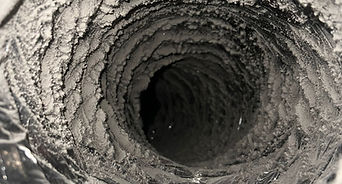
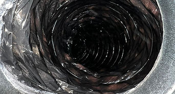

If your Tampa home has dusty registers, a musty AC smell, oak pollen everywhere in spring, or it's been more than 3 years since the last cleaning — our Florida-tuned process gets ductwork back to factory clean.
Serving all of Tampa Bay: Tampa, St. Petersburg, Clearwater, Brandon, Riverview, and Wesley Chapel.
A direct answer for Tampa homeowners: our $99 residential air duct cleaning covers a single HVAC system and includes everything below. There are no per-vent surcharges hidden in fine print.

We map your supply and return runs, identify any access challenges, and check for visible mold, water staining, or pest activity in the system before we run any equipment.

Industrial vacuum pulls air inward through every register while rotary brushes agitate the duct walls. Dust, pollen, and biological buildup are pulled into the collection unit — never released into your living space.

Final airflow check at every register, optional EPA-registered antimicrobial sanitizer, before-and-after photos of the duct interiors, and a full clean-up of the work area.
Independent pricing data from Angi puts the Tampa average at $300–$700 for duct cleaning. Our flat-rate package starts at $99 because we run lean and don't pad the invoice.
Final price depends on system size, number of vents, dual-zone setups, and level of buildup. We give a firm quote after the free inspection — no surprises on the invoice.
Same supply duct, photographed before and after our cleaning process.


Same flat-rate pricing across all six counties we serve. Featured city pages: Tampa, St. Petersburg, Clearwater, Brandon, Riverview, Wesley Chapel — plus Lutz, Land O' Lakes, Plant City, Lakeland, Sarasota, and Bradenton.
Direct answers to the questions Tampa Bay homeowners ask before booking.
We connect an industrial vacuum to your duct system at the air handler. The vacuum creates negative pressure that pulls air inward through every register. While the vacuum runs, our technician inserts rotary brushes to agitate dust, pollen, and biological buildup off the duct walls so it gets pulled into the collection unit — not pushed into your home.
Tampa Bay humidity averages 75% and stays high almost year-round. Combined with HVAC systems that run nearly nonstop and a 6-month oak pollen season, duct interiors collect mold spores, pollen, dander, and dust mites faster than in most U.S. cities. Cleaning every 2–3 years removes buildup before it recirculates 5–7 times per day.
No. Negative pressure pulls debris into the vacuum collection unit — it does not push dust into your living space. Most Tampa customers report fresher air immediately, especially in homes with prior musty AC smell or visible mold around return vents.
Yes. Our standard cleaning covers all supply registers and the return air ducts. In Tampa homes, the return side typically carries the heaviest dust and pollen load — we treat both equally.
Yes. Flexible duct is the most common type in Tampa Bay and we clean it daily. Our brushes are sized for flex, sheet metal, and fiberboard duct alike. We'll flag any tears, disconnects, or insulation damage during inspection — a common cause of mold problems in attic-routed Florida duct runs.
We ask that you clear a path to each register before the appointment. We don't move heavy furniture or major appliances. If a register is fully blocked, we'll point it out during the walk-through so you can decide.
Optional. We recommend the antimicrobial sanitizer when there's visible mold, persistent musty smell after mechanical cleaning, recent water damage, or known allergy/asthma issues. For routine cleaning with no biological signs, mechanical extraction is usually enough.
Tampa average per Angi: $300–$700. Our flat-rate residential package starts at $99. Combo Air Duct + Dryer Vent starts at $149. Final price depends on system size and buildup; firm quote after free inspection.
Bundle services in one visit and save on travel.
Evaporator coil, blower wheel, and drain pan cleaning. Fixes musty smell, weak cooling, high bills. Starting at $99.
Learn More →
Prevents fires and cuts dry time. Starting at $79. Bundle with duct cleaning for $149 total.
Learn More →Dedicated pages for our most-served Tampa Bay cities.
Old Northeast, Snell Isle, Downtown St. Pete & surrounding areas.
See St. Pete page →New construction, Land O' Lakes, dual-system Pasco County homes.
See Wesley Chapel page →Tampa, Florida
📞 (813) 285-7449 ✉️ Masterinductcleaning@gmail.com 💬 WhatsApp UsMon–Sun: 7:00 AM – 9:00 PM
We respond within 1 hour during business hours.